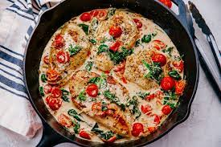

Creamy Italian Chicken

talian salad dressing mix is like a secret weapon for adding flavor to this creamy chicken dish.
Served over rice or pasta, this Italian dressing chicken is rich, delicious and special enough for company
Ingredients
- 4 boneless skinless chicken breast halves (6 ounces each)
- 1 envelope Italian salad dressing mix
- 1/4 cup water
- 1 package (8 ounces) cream cheese, softened
- 1 can (10-3/4 ounces) condensed cream of chicken soup, undiluted
- 1 can (4 ounces) mushroom stems and pieces, drained
- Hot cooked pasta or rice
- Minced fresh oregano, optional
Procedure
- Place the chicken in a 3-qt. slow cooker. Combine salad dressing mix and water; pour over chicken.
Cover and cook on low for 3 hours. Remove chicken. Cool slightly; shred meat with two forks. Return to slow cooker.
- In a small bowl, beat cream cheese and soup until blended. Stir in mushrooms. Pour over chicken. Cover and cook until chicken is tender,
1 hour longer. Serve with pasta or rice. If desired, sprinkle with oregano.
Click To Return